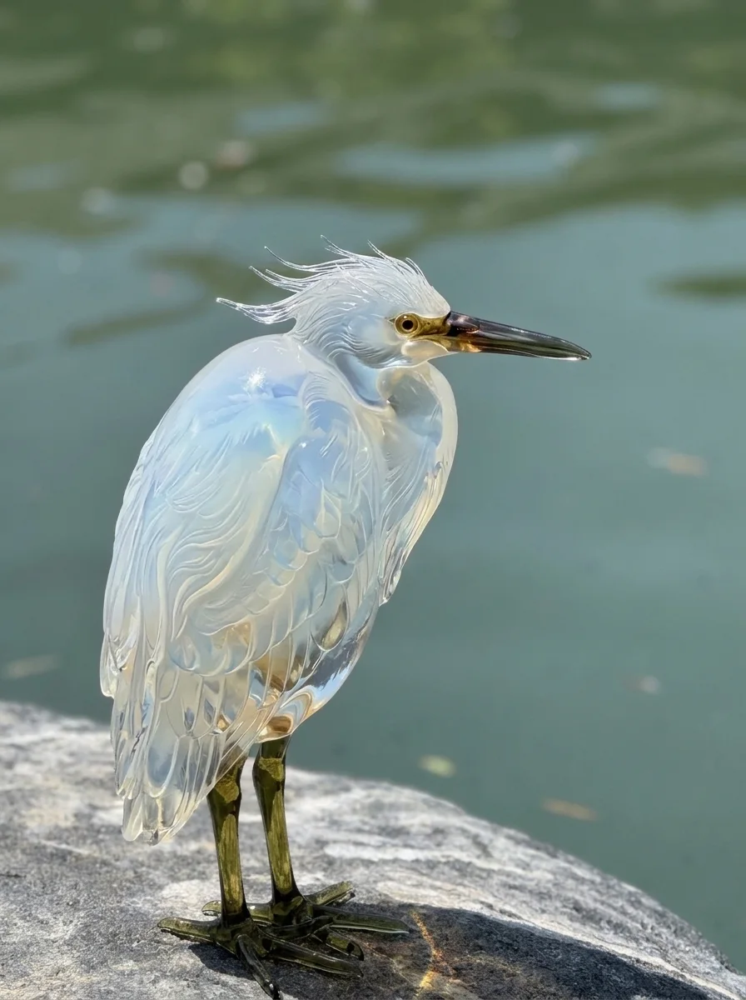
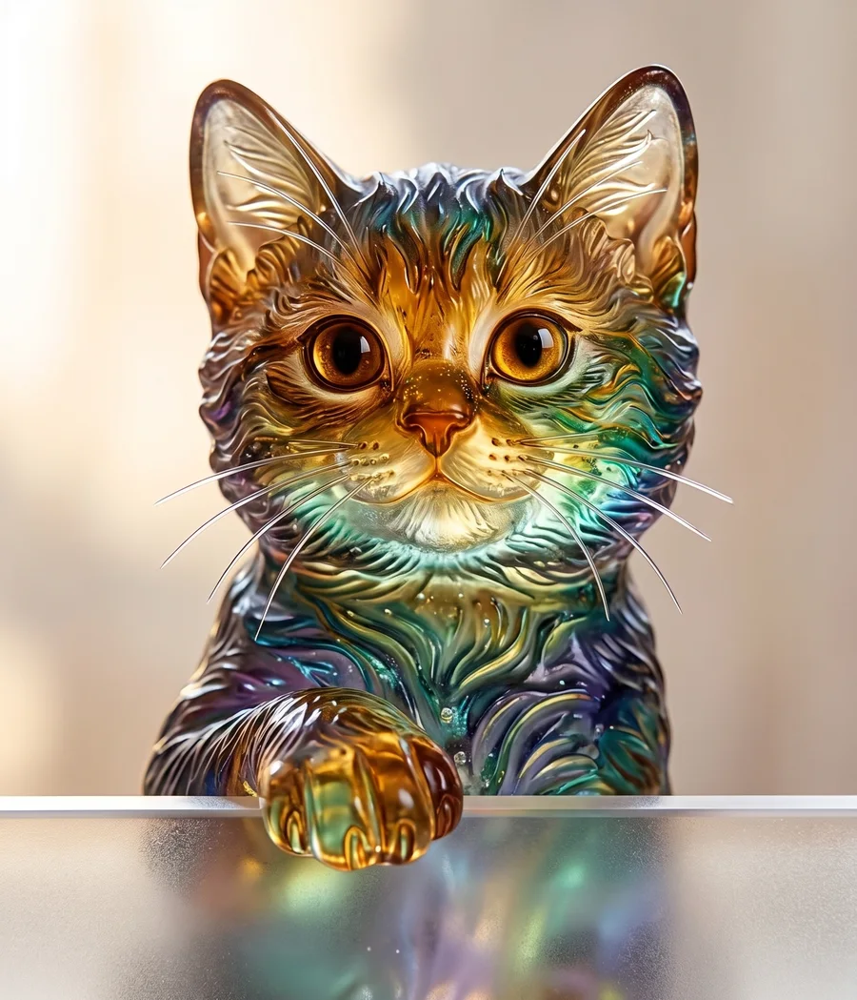
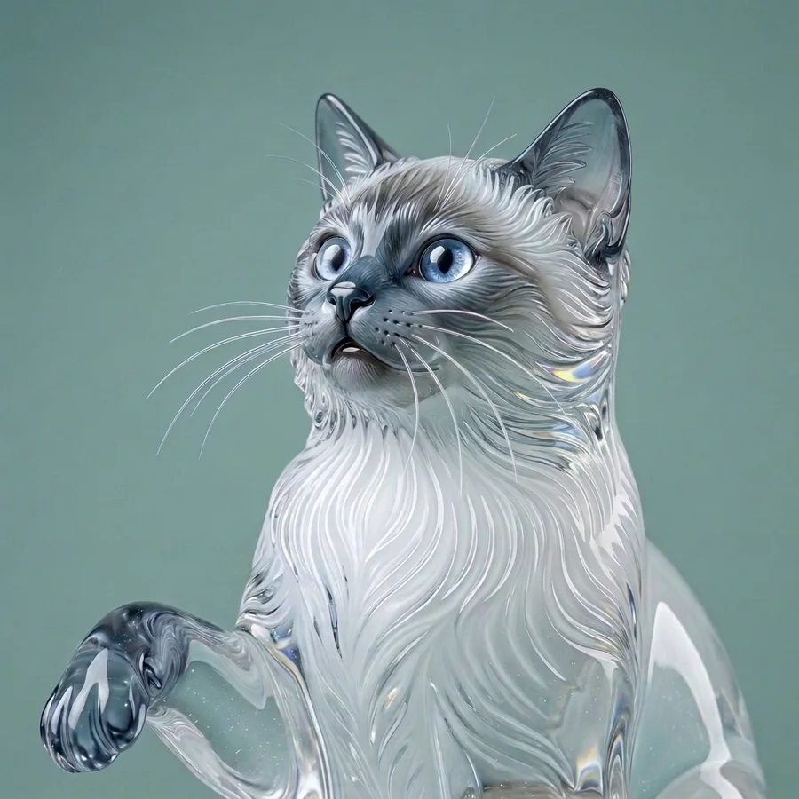
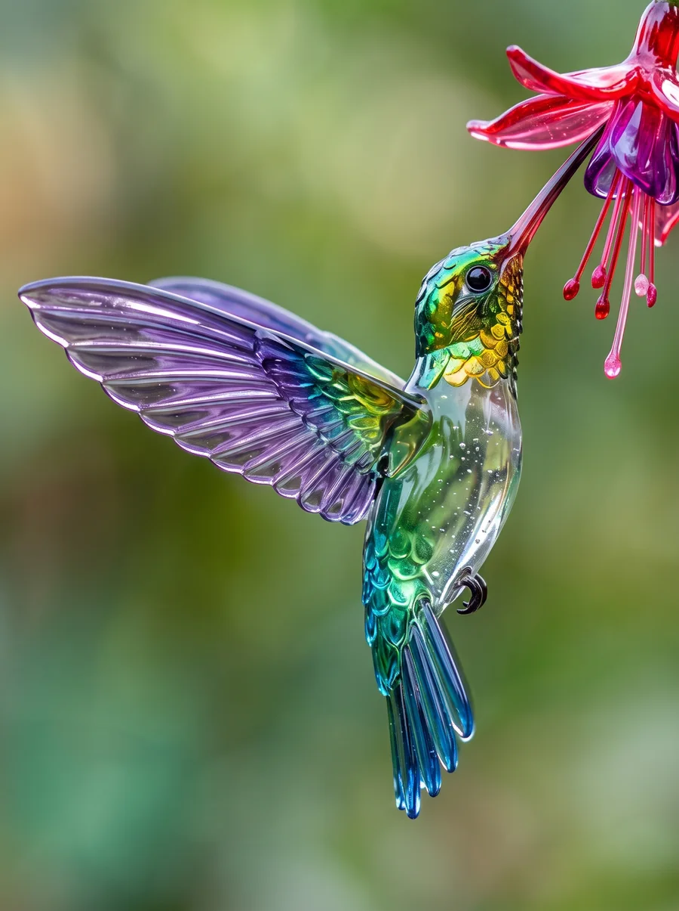
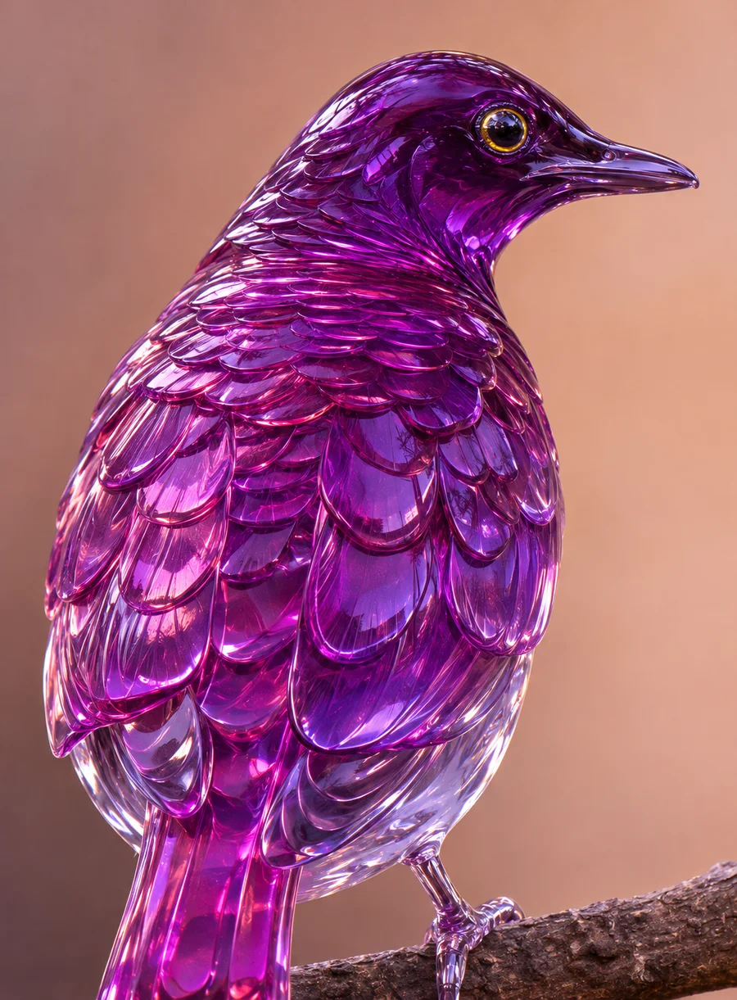

01:02
A quiet one-minute winter piano solo paired with a macro study of a single crystalline snowflake resting on frost-dusted ebony and ivory keys. 一段靜謐的一分鐘冬日純鋼琴獨奏，搭配微距鏡頭下停駐在覆霜黑鍵上的六角雪花結晶，在黑白琴鍵間凝結冬日氣息。
A quiet one-minute winter piano solo paired with a macro study of a single crystalline snowflake resting on frost-dusted ebony and ivory keys. 一段靜謐的一分鐘冬日純鋼琴獨奏，搭配微距鏡頭下停駐在覆霜黑鍵上的六角雪花結晶，在黑白琴鍵間凝結冬日氣息。

An opalescent white glass egret perched quietly on a waterside stone—windswept crystal plumes, dark translucent beak, and olive-glass legs casting sunlit caustics. 靜立水畔石上的乳白琉璃白鷺，微風吹拂的水晶冠羽、深色半透明長喙，與橄欖綠琉璃細足在石面折出淡淡光影。

Warm amber, verdigris, and violet tones swirl through sculpted glass fur as a curious kitten rests one translucent paw over a frosted ledge. 暖琥珀、孔雀綠與紫韻在琉璃毛紋間流動，小貓將透明前爪搭在霧面玻璃檯緣好奇凝望。

Smoky-blue points and spun-glass whiskers emerge from a clear crystal feline form, caught mid-gesture with one paw gently lifted. 煙灰藍重點色與拉絲玻璃鬍鬚從透明水晶貓身中浮現，凝結於輕抬前掌的瞬間神態。

A weightless glass hummingbird suspended mid-flight—violet-tinted wings, emerald crown, and micro-bubbles trapped inside a clear torso reaching for a ruby glass blossom. 懸停半空的琉璃蜂鳥，紫暈羽翼、翠綠冠羽與腹中懸浮的微氣泡，在光影中探向緋紅琉璃花蕊。

Layered violet glass plumage resting on a raw branch—overlapping translucent scales softening into clear crystal along the belly. 層疊紫晶琉璃羽片棲於粗獷枯枝上，半透明羽鱗向下漸融為純淨透明水晶腹身。